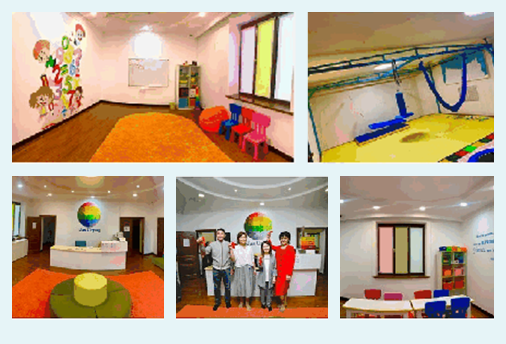
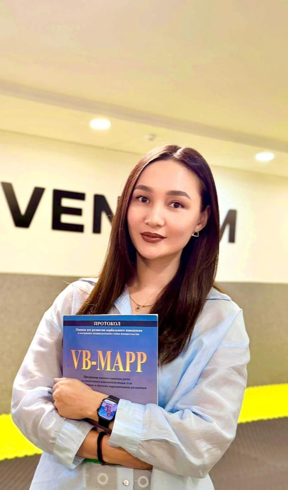

Родителям
Запишитесь на консультацию. Администратор подскажет ближайший центр и первый шаг.
Консультации, терапия, обучение навыкам и поддержка родителей в четырех центрах Jas Urpaq & Eventum.

Запишитесь на консультацию. Администратор подскажет ближайший центр и первый шаг.
Посмотрите стажировку 2026: практика в действующих центрах, кураторы и супервизии.
СтажировкаПомогите фонду ресурсами, временем или профессиональной поддержкой.
Ребенок может получать поддержку в подходящем формате и переходить между направлениями по мере роста, целей и динамики развития.
Ранняя поддержка и базовые навыки для детей 2-9 лет.
Академические навыки, трудотерапия и подготовка к школе.
Полный день и формирование навыков самостоятельной жизни.
Индивидуальные занятия: ABA, логопед, сенсорная интеграция, нейропсихолог.
Стажировка создана для специалистов, которым важно перейти от теории к уверенной работе с ребенком: постановка целей, анализ поведения, индивидуальная программа и обратная связь кураторов.
Понять систему, включиться в групповую работу с ребенком и получить групповую обратную связь.
200 000 тгСамостоятельное проведение занятий под сопровождением, ведение кейса, данные, программа и видеоразбор.
380 000 тгНа встрече обсуждались поддержка социальных проектов, развитие инициатив и дальнейшее сотрудничество государства, бизнеса и некоммерческого сектора.
Смотреть публикациюАутизм - не болезнь, а особенность. Наша задача - понимать, принимать и учить этому детей.
Команда продолжает учиться, чтобы помогать детям еще эффективнее и расти вместе с Jas Urpaq и Eventum.
Смотреть публикациюОснователь фонда

Специалист по раннему развитию

Куратор поведенческой терапии

Нейропсихолог
Выберите ближайший центр или позвоните администратору - мы подскажем, с какого формата лучше начать.
+7 776 750 4466Позвоните или приходите в любой из 4 центров на короткую вводную встречу. Специалист поговорит с вами о ребёнке и предложит первую программу - диагноз или направление врача для этого не требуются.
Да. Часть каждого пожертвования направляется в фонд стипендий, который полностью или частично покрывает занятия для нуждающихся семей. Уточните условия у координатора центра.
Наши программы разделены на четыре группы - Kids, Junior, Jas Urpaq Group и Eventum - от раннего детства до подросткового возраста, плюс выездные мероприятия для всех возрастов. Подробнее - на странице «О нас».
Мы регулярно набираем волонтёров и круглый год ищем лицензированных специалистов. Обратитесь в любой центр, а действующие сотрудники могут войти на странице «Для сотрудников».